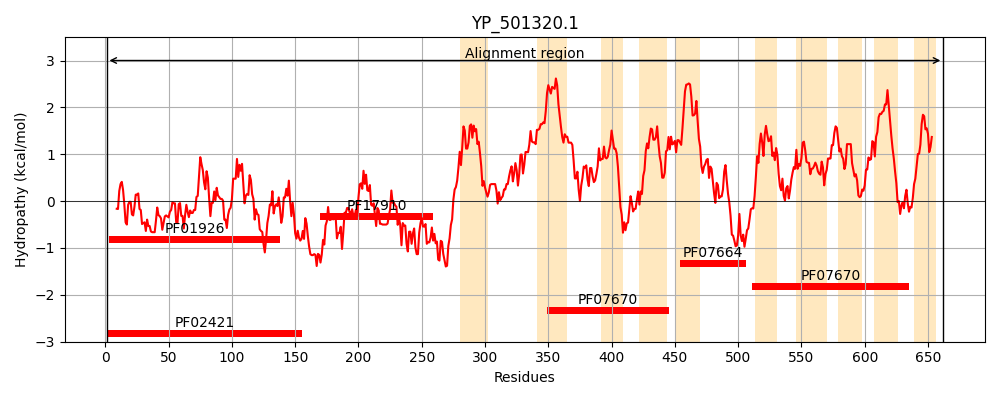
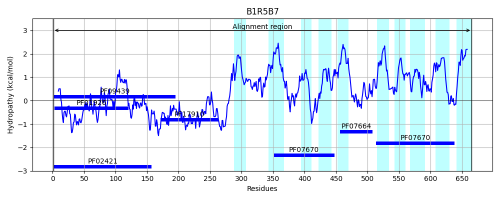
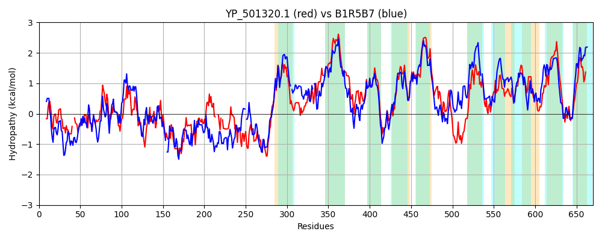

Hit Accession: B1R5B7
Hit TCID: 9.A.8.1.14
Hit Description: gnl|BL_ORD_ID|1648 gnl|TC-DB|B1R5B7|9.A.8.1.14 Ferrous iron transport protein B OS=Clostridium perfringens B str. ATCC 3626 GN=feoB PE=3 SV=1
Mach Len: 670
e:0.000000
Query TMS Count : 10
Hit TMS Count: 10
TMS-Overlap Score: 8.950000
Predicted Substrates:CHEBI:34754;iron(2+)
BLAST Alignment:
Score: 1362 , Bit scores: 529 bits, E-value: 0.0e+00, Alignment length: 670, Percentage identity: 43
Query: 1 MENYCILGNPNVGKTSLFNALTGSYEYIGNWSGVTVEKKVG--KLKENVGQLIDLPGTYDLSPISKDETVVTDYLLNDSFSGIINIVDASQLKRNMQLTVQLLELNQPIYIGLNMIDVATKRGIKIDYHKLMKKLKTPIFPVVARTGKGTKYLLGEIKHLGEGYQPHFKINYGEKIEETIKNMCQIIMTETSHDKYQARFIAIQFLLNNMQIAN---ELNS-EVVNKLSSLRDQVAEQVGAVSVRREMERIRNHYIETLLQDVVTYPDEDKQYFSSRIDKILTHKYIGMPIFLAIMWLIFQTTFTWIGTPLSDQLDAFIGGTFTDSVKTIMNYLGVIPFLQDLITDGIIAGVGSVLVFVPQIVVLFFFISLLEDSGYMARIAVLMDRIMESFGLSGKSFIPMIIGFGCNVPSIMAARSIENEKERLTTILIAPFMSCSARLPVYALFVGIFFKENQSLVVLSLYVLGIIMAFLVSTVLTKTILKNDNAIFIVELPTYRVPSIKTLWRSTWEKAKGFVRKAGTFIFGGSVVIWLLSYVGPHGINVNINQSFLHMVGSFFGMLVQPLGFGTWQAGATLVPGFLAKEVIVSSMAIIYSSGDAG--LVNVIQNQFTPLSAYAFMIFILLYIPCVSTVAAIRKETYSWKWTALAVAYPLVTAYVLTFIFYQVGHL 662
M + GNPN GKTSLFN LT S ++IGNW GVTVEKK G K K ++IDLPGTY L S+DE V +Y+L D +IN+VDA+ L+RN+ LT QL+E+ + I LNMID A I+ID +KL K+L PI A +G + L+ E + + INYGE IE IKN+ ++ T + ++ + A++ L N+ I + +LNS + KL + + +G + +++ R +I ++ +DV+ P E + + +IDKI+T+KY+G+PIF IM+ +++ TF IG + + I + N +G L I G+ GVG+VL F+P I+V++F + LLEDSGYMAR A +MDR+M GL GK+F+ MI+ GCNVP IM+ R++EN+K+R+ ILI PF+SC AR+P+YA+FV FF +Q LV+ SLYVLGII+A + + +KT+ K +++ F++ELP YR+PSIK ++ WEKA F +KAG IF +V+W LS V P G+ N S L M+GSF L G+GTWQAG +L+ G LAKE +V++M ++Y+ + G L+NVIQ FTPLSA +F++ LLY PC++ + AI++ET S KWT + Y V A VL+ + YQVG L
Sbjct: 1 MLTIALAGNPNCGKTSLFNLLTKSRQHIGNWPGVTVEKKEGTLKFKGESYKVIDLPGTYSLGAYSEDEIVARNYILKDKPDVVINVVDATNLERNLYLTTQLIEMGANVVIALNMIDQAEALNIEIDTNKLSKRLGVPIIKTSALKNRGIEELI-ETSIYSKKNEKLININYGEDIENEIKNLSSLLETYKNKLEFPVNWTALKLLENDEYIKDKVKQLNSPSIFTKLEESNKTIEKNIGFEADMSIVDK-RYSFISSITEDVIKKPSEKQVTTTEKIDKIVTNKYLGIPIFALIMYCLYELTFI-IGAGIQEWFGDLIAKAGVIVSEWFSN-MGAPELLVGFIDKGLFGGVGAVLSFLPLIMVMYFLLGLLEDSGYMARAAYVMDRLMRGLGLHGKTFVSMIVSVGCNVPGIMSTRTLENKKDRMIAILINPFISCGARMPIYAVFVEAFFPTHQGLVLFSLYVLGIIVALISGKIFSKTLFKGESSYFVMELPAYRMPSIKNVFLLMWEKAGAFFKKAGMIIFPMMIVLWALS-VLPLGVEPNSEHSILGMIGSFVAPLFVLAGYGTWQAGVSLITGILAKESVVATMGMVYAGVEEGEALINVIQQVFTPLSAISFLVMTLLYTPCLAALGAIKRETNSMKWTIFSAVYTFVIALVLSTLVYQVGLL 665 | Protein Hydropathy Plots: |
|---|
|  |  |
Pairwise Alignment-Hydropathy Plot:
|
|---|
|  |